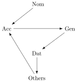
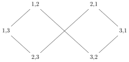

The graph-theoretic insights about condensations from the previous unit can also be expressed in order-theoretic terms. This part is somewhat technical, so you might have to read it multiple times to make sure you understand what is going on. The central idea is that of a quotient structure. Intuitively, the quotient structure of some structure \(S\) conflates all points of \(S\) that are equivalent in some relevant way. This can reveal deep structural properties of \(S\) that would be missed otherwise, or it can allow for more efficient algorithms, storage, and so on. We will come across several mechanism in later units that that can be regarded as instances of quotient structures.
Consider the set of all natural numbers. We can put them into three distinct equivalence classes based on their remainder when divided by \(3\) (also called modulo counting).
We then stipulate that \([x] \prec [y]\) iff there is some \(z \in [x]\) such that \(z + 1 \in [y]\). For instance, \([2] \prec [0]\) because \(5 \in [2]\) and \(5 + 1 = 6 \in [0]\). We hence have \([0] \prec [1]\), \([1] \prec [2]\), and \([2] \prec [0]\). The quotient structure \(\left \langle \left \{ [0], [1], [2] \right \}, \prec \right \rangle\) thus is shaped like a ring of finite size, even though it was constructed from the infinite line of natural numbers.
For any given graph, its condensation is a particular kind of quotient structure. Instead of covering this general case, we will just consider the relevant quotient structure for noun stem allomorphy. The hierarchy for that is repeated below

First, we define an equivalence relation \(\sim\) such that \(x \sim y\) iff both \(x \leq y\) and \(y \leq x\) hold. In most of our linguistic hierarchies, there are no cases where \(x \sim y\) unless \(x = y\), but in the noun stem allomorphy hierarchy we have \(\text{Acc} \sim \text{Gen} \sim \text{Dat} \sim \text{Others}\).
Write down the relation \(\sim\) over the noun stem hierarchy as a set of pairs. That is to say, this set contains \(\left \langle x,y \right \rangle\) iff \(x \sim y\).
Let \(C\) be the set of all cases in this hierarchy, i.e. \(C \mathrel{\mathop:}=\{ \text{Nom}, \text{Acc}, \text{Gen}, \text{Dat}, \text{Others} \}\). We use \(C/\mathop{\sim}\) to denote the corresponding quotient set under the equivalence relation \(\sim\). The quotient set consists of two equivalence classes, one containing only nominative and one containing all other cases. We define a special order \(\sqsubseteq\) on this structure such that \([x] \sqsubseteq [y]\) iff \(x \leq y\) in the original hierarchy. So now we have a quotient structure that looks exactly like the lattice 2, except that one element represents nominative and the other all other cases. While the original hierarchy is not even a semilattice or a weak partial order, its quotient structure is a lattice.
Just as with the graph-theoretic approach in the previous unit, we have taken one particular hierarchy that is not a semilattice and have shown that it still forms a semilattice at a higher level of abstraction. The only difference to our previous strategy is that this level of abstraction is now defined in terms of quotient structures rather than graph condensations.
We can construct such quotient structures for all other hierarchies, but in these cases the two look exactly the same because there is a one-to-one relation between elements in the hierarchy and equivalence classes in the quotient structure.
Construct the quotient structure for the standard case hierarchy \(H\) (in which accusative and genitive are unordered with respect to each other). Verify for yourself that the quotient structure \(H/\mathop{\sim}\) has exactly the same shape as this hierarchy.
In sum, then, we can formulate the following restriction on linguistic hierarchies: given \(\sim\) as defined above, every linguistic hierarchy must have a quotient structure under \(\sim\) that forms a semilattice.
Once again, explain whether this also handles the problematic case of the PCC hierarchy.
The first attempt at a person-person hierarchy for the PCC had the shape below.

Would this have been a superior choice given our new understanding of linguistic hierarchies, or would we still run into problems with the PCC? Justify your answer.